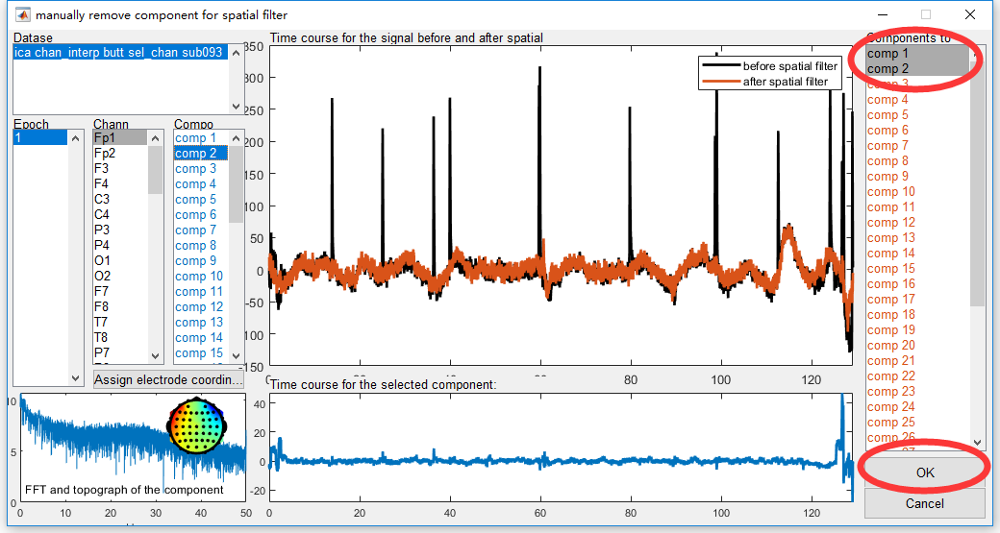

Theory and Model of ICA/BSS
Independent Component Analysis (ICA) is a kind of Blind Signal Separation (BSS) method. Linearly, ICA can be modeled as following figure
Consider X is the recorded EEG signal with the dimension channel × time, S is the source signal with the dimension component × time, A is the mixing matrix with the dimension channel × component. The aim of ICA is to find the mixing matrix A to make each component (each row) to be indenpendent of each other. According to the linear model, we use ICA for artifact removing in EEG signal processing by follow steps
- Run ICA algorithm to get the mixing matrix A
- Automatically, we can have the source signal S = pinv(A) × X;
- Indentify the artifact component manually in S. By setting the corresponding row as 0, we have S_bar;
- By S_bar with the artifact removed, we can automatically get X_bar = A × S_bar.
The signal X_bar is the result by ICA artifact removal. In Letswave7, step 2 and 4 can be completed automatically, in which pinv(A), also called unmixing matrix, is the pseudo inverse matrix for matrix A. Step 1 (computer ICA matrix) and step 3 (identify artifact component) need to be performed manually. Hence, in Letswave7, we need two steps to finish the work of artifact removal by ICA.
Step 5. Computer ICA Matrix
Select the dataset “chan_interp butt sel_chan sub093”” in the data list of the manager module, and click Process->Spatial filters(ICA/PCA)->Computer ICA matrix in the menu. In the batch module, select number of components as deside by user and set the Components Numbers as 40. Click the button Run for the bad electrodes interpolation. A new dataset with the name “ica chan_interp butt sel_chan sub093” will be appeared in the data list of the manager module.

Step 6. Identify Artifact Component
After we otain the ICA matrix, the mixing matrix A and the unmixing matrix pinv(A), we need to identify the components with artifact manually.
Select the dataset “ica chan_interp butt sel_chan sub093”” in the data list of the manager module, and click Process->Spatial filters(ICA/PCA)->Apply ICA/PCA spatial filter in the menu. We will see the interface for manually reomve component for spatial filter.
In this interface, different information are marked by different colors. The black color represents the original signal X, color blue for source S, and color orange for the filtered signal X_bar. With the list box in black in the left panel, we can select the dataset, epoch, and channel to check the origial signal X as the black curve in the middle panel. Next, we can select the component in blue in the left panel to check the time/frequency/spatial feature of the each component in source S in the bottom panel in blue. After we identify the component as the artifact, we can select them in the right panel in orange. Correspondingly, the orange curve in the middle panel would show the filtered signal X_bar. We can check the reuslt of ICA filter immediately.
In this study, we can identify component 1 as the eye blink artifact. The scalp topography suggest the “equivalent current dipole” (ECD)s close to the eyes. The waveform in the time domain like a spike and the power in the frequency domain concentrates at low frequency band (<5Hz) both suggest this independent component as the eye blink artifact. After we remove this component by select comp 1 in the right panel, the blink artifact has been effectivly removed as compared the orange curve X_bar with the black curve X in the middle panel. Similarly, component 2 as the artifact with lateral eye movement. The clear evidence can be observed from the scalp topography.
Select comp 1, comp 2 in the right panel in orange color and click the button OK. A new dataset with the name “sp_filter ica chan_interp butt sel_chan sub093” will be appeared in the data list of the manager module, which is result of artifact removing by ICA.

Discussion
For running the ICA in Letswave7, there are several things need to be discussed.
- Labeling independent components is an empirical work. For some components, it is clear to be identified. However, for some components it may contain both signal and noise. Each person may has his/her own view about the principle in rejecting the independent components. Some people may be radical, who reject all the components that whenever possible to contain artifacts. Contrary to this, some person would be conservative. They only reject the components that has been identified 100% to be artifact. In this manual, we does not discuss which principle is more reasonable. Some tutorials can help you to learn how to identify the ICA component. Click here to visit.
- In the menu, there are two items for ICA matrix computering, which are Computer ICA matrix and Computer ICA matrix (merged). They have similar function, but are different in input and output. If multiple dataset has been selected, Computer ICA matrix will computer the ICA matrix separately. However, with Computer ICA matrix (merged), Letswave7 firstly merged all the selected datasets together, and then computer a common ICA matrix for all the datasets.
- The order for the operation of ICA and segmentation should also be discussed in preprocessing. Since ICA is a data driven methods for artifact removal, we need enough data to run ICA. While, excessive amount of data can greatly increase computing time, but the improvement of the accuracy in the result is limited. Normally, we run the ICA after segmentation, since segmentation could shorten the data length and remove irrelevant noises. However, in this case of the P300 study, the overlap amonge trials is very serious, running ICA after segmentation would unnecessarily increase calculation time. Hence we run ICA before segmentation.
- In this case, we run the ICA by selecting the number of the components as 40. Normally, the maximum number of independent components that can be separated is equal to number of channels in the original signal X. If X has been referenced, the maximum number should minus 1. For each channel has been interpolated, the maximum number should minus 1 again. In addition, decreasing the number of independent components to separate is a way to reduce the computing time for the ICA matrix. In this case, since the channel number 64 is large enough, we set the number of independent components as 40 is OK.
- Since the computing of ICA matrix is time comsuming, several way could shorten the time for computing ICA matrix. In addition to reducing the component number for separating, downsampling would be another effective way. In this case, the sampling rate is 1000Hz. For ICA matrix computing, you can downsample the dataset to 100Hz by selecting Edit->Resample Signals->Downsample signals (integer ratio) in the menu. Once you already have the ICA matrix from the downsampled data, you can assign the ICA matrix to the dataset before downsampling by selecting Process->Spatial filters(ICA/PCA)->Assign ICA/PCA Matrix operation in the menu. After assigning the matrix, we can similarly to indetify the components with artifact by selecting Process->Spatial filters(ICA/PCA)->Apply ICA/PCA spatial filter in the menu.